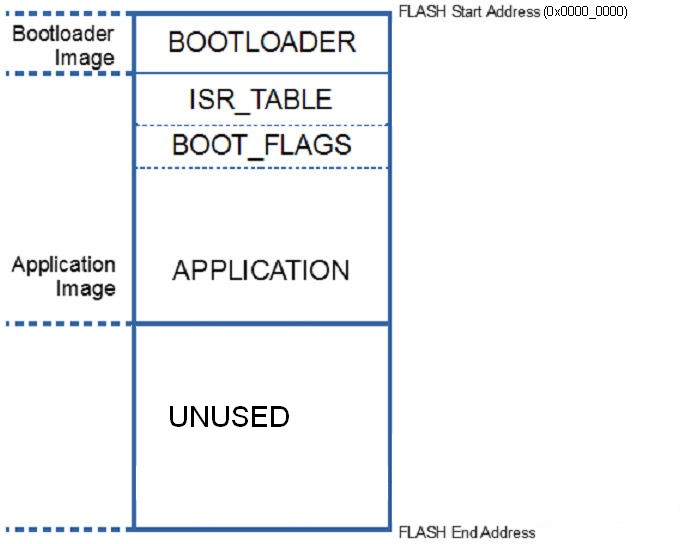

The Bootloader is a program which resides in a reserved area of the flash
memory of the device. It starts
before the application, checks if an application image update needs to be performed,
and, if true, it proceeds to replace the current application image with a new image. If
an update does not need to be performed, the bootloader terminates and the application
starts to run.
There are two types of bootloaders available in the Connectivity Software package:
- OTAP Bootloader
- FSCI Bootloader
The figure below shows the memory layout of the device with the relevant sections and
their size, such as the bootloader, the application, and the reserved areas.
Figure 1. Bootloader overview

The application image is divided into the following sections:
- The ISR_TABLE section contains the MCU interrupt table which has a
fixed reserved size. This section must be placed immediately after the bootloader
image.
-
The BOOT_FLAGS section contains bootloader flags, target bootloader version, and
address of the internal storage.
The OTAP Bootloader looks for this section immediately after the ISR_TABLE
section which has fixed size.
- New Image Flag – set by the application to notify the OTAP Bootloader that a new
image is available. This flag is set by calling the OTA_SetNewImageFlag()
function from the OtaSupport module.
- Image Upgrade Complete Flag – set by the OTAP Bootloader when the new image copy
process is completed successfully.
- Bootloader Version – bootloader version expected by the application;
set at compile time.
- Internal Storage start address – set by the application to inform the
OAP Bootloader the flash address of the internal storage at which the
new image is available. If this flag is invalid, the external image
storage will be used.
- The APPLICATION section contains the application code, read only data, and,
optionally , an internal image storage area and an application NVM
section:
- The optional application NVM section is placed at the highest flash
address range available (not reserved), if present.
- The optional internal image storage area is placed before the NVM
section if the NVM is present, or at the highest available flash address if the NVM
is not present.
If the application uses the default connectivity linker file, the user can add the
gUseBootloaderLink_d=1symbol to the project linker configuration
to offset the application’s binary and accommodate the Bootloader.
Note: The bootloader can only update the application’s binary code. The
bootloader image itself is not updated.